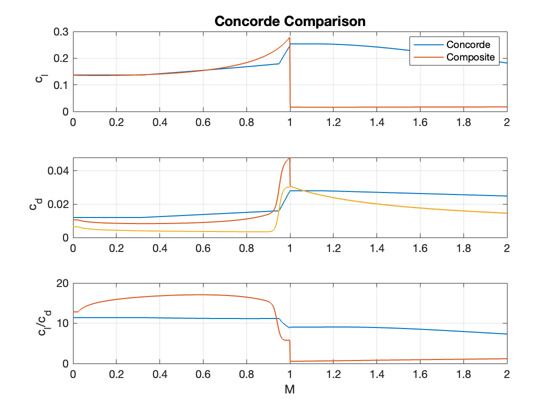

Contents
Compare Concorde with the CL and CD functions.
See CDCLCOmposite and CD0Composite for more information.
%--------------------------------------------------------------------------
%-------------------------------------------------------------------------- % Copyright (c) 2013 Princeton Satellite Systems, Inc. % All rights reserved. %-------------------------------------------------------------------------- % Since version 2014.1 %--------------------------------------------------------------------------
Parameters
h = 1000; % Altitude (m) p = StdAtm( h ); % Atmosphere properties m = linspace(0,2,1000); % Mach d.length = 1; % Characteristic length d.sweep = 55*pi/180; % Wing sweep angle d.thicknessRatio = 0.03; % Wing thickness ratio d.cDM1Ratio = 1.8; % Drag rise at Mach 1 d.cLAlpha = 0.034*180/pi; % Lift curve slode d.cLM1 = 4; % Lift at Mach 1 d.oswaldEff = 0.9; % Oswald efficiency factor d.aspectRatio = 1.55; % Wing aspect ratio d.mDD = 0.9; % Mach for the drag divergence region d.cDM1 = 0.027; % Drag coefficient at Mach 1 d.model = 'prandtl-schlichting'; % Skin friction model alpha = 4*pi/180; % Angle of attack
Concorde model
[cL, cD] = ConcordeLD( m );
Analytical model
[cL1, cD1, cD0] = CDCLComposite( m, d, alpha, p ); lD = cL1./cD1;
Plot the results
Plot2D( m, [cL;cD;cL./cD;cL1;cD1;lD;cD0], 'M', {'c_l' 'c_d' 'c_l/c_d'},... 'Concorde Comparison','lin', {'[1 4]' '[2 5 7]' '[3 6]'},{},1,[],1) legend('Concorde','Composite') %-------------------------------------- % $Id: ac9d4e8edea4ab5326b25ffe825d70c5b186b13d $